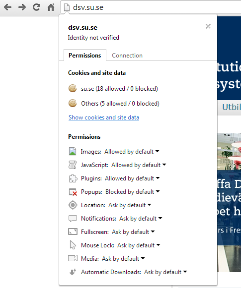

Task 1: Basic Identifcation of Secure Web communication on the Internet
Task 1
In this task you will use the Google Chrome web browser in order to understand whether you are using a secure connection to communicate with a web server.
- Start up the Google Chrome Browser and type in the address bar "http://dsv.su.se". Press Enter. The end result of this step should look similar to the image below.

- When the web page has loaded, click on the icon (that looks like a page) that is between the "Home" button and the web address you just typed in. The result should look something close to the image below.

NB: In Google Chrome, observe the information that is on the "Permissions" tab and then do the same with the "Connections" tab.
You can get further details about the information on these tabs by clicking the link "What do these mean" in the "Connections" tab
- Which application layer protocol was used to access the website "dsv.su.se"? Is this protocol secure as it is, i.e. in it's basic form? (Hint: Think in terms of confidentiality, integrity, server authentication, etc)
- From clicking the button to the left of the address bar, just before the web address, what information can you gather in relation to the interaction between you and the "dsv.su.se" server?
- Type "https://dsv.su.se" in the address bar and press "Enter". If this succeeds, observe the same details as in Step 1 and 2, and note the differences. If it does not work, explain what the reason could be for it not working.
- Type "http://www.google.com" in the address bar and press "Enter". If this succeeds, you should see the screen as is shown below.

- In this case, notice that the protocol has changed to "https". What is "https"? Why did this change happen? What are the implications of this?
- Click on the green lock icon and observe the information in the dialog that drops down.
- What differences do you notice with this web server (www.google.com) as compared to the "dsv.su.se" one?
- Under the "Connection" tab click on the "Certificate Information" link. From the resulting dialog, go to the "General" tab.
Observe the "Certificate Informaton", "Issued to", "Issued by" and "Valid from" fields. Go to the "Certification Path" tab. Observe the "Certification Path" tab
and the "Certificate status" fields.
- Why are the "Issued to" and "Issued by" fields important? Why are the "Valid from" and "Valid to" dates important?
- Type "https://cs2lab.dsv.su.se/moodle/login/index.php" into the web browser address bar and press "Enter".
- Did the website load, or did the browser issue an error message? If it issued an error message, what was the error message?
What do you notice in the address bar that is different?
- Click on the "Help me understand" link and read what it says. Click on the icon that is at the leftmost corner of the address bar (i.e. the lock icon with an 'x' on it). On the resulting dialog box, click on the "Connection" tab.
Observe keenly the information that is presented, then click on "Certificate Information" link.
- The "Certificate Information" link shows the certificate presented by the webserver. Observe the various fields presented in the certificate including the "Certificate information comment", the "Issued to", "Issued by", "Valid from" and "Valid to" fields.
Also take a look at the "Certification Path" and the "Certificate Status".
- What do you notice with this certificate that could potentially pose a security problem?
- Optional: Perform the above steps on the Firefox Web Browser to see how these capabilities appear.
(Note: The above instructions are directed towards Google Chrome. Keep this in mind as the layout of things may be slightly different in Mozilla Firefox)
Task 2: Installing some Security Enhancing Web Browser plugins
Task 2
In this task you will install some web browser plugins in order to enhance your security and awareness of some of the things
happening in the background as you surf the internet. You will be using Mozilla Firefox as your web browser. (Note: Some of these plugins
may have equivalents that can be installed on Google Chrome)
Client-side scripting, which may run on your computer when you load a webpage, can provide a lot of fancy graphical interaction,
but could also cause a lot of damage if not regulated /secured.
The first plugin we will install is the "NoScript" plugin, which helps in the regulation of such scripts
from running wild on your computer through the web browser.
In order to install this plugin, open the Firefox Web browser. Browse to the following link: "https://addons.mozilla.org/en-US/firefox/addon/noscript/"
Click on the green "Add to Firefox" button in order to install the NoScript plugin into Firefox. A "Software Installation" dialog will pop up as shown below. Click on the "Install" button
and the plugin will be installed.

Installation will then commence, and when completed, another dialog will pop-up prompting you to restart the browser. Restart the browser
at this point.
- From the description of the plugin on the Firefox Addons webpage, name and briefly describe any 2 types of attacks
that this plugin can prevent.
- We will first disable the NoScript functionality in order to demonstrate how the web browser would behave if scripts (such as Javascript
were allowed to run freely in the wild.) To do this, locate the "NoScript" icon in the status bar. Click on it and find the option "Allow Scripts Globally (dangerous)".
This will deactivate the NoScript functionality for all web domains.
- Navigate to the website: "http://www.insecurelabs.org/Task". Click on the "Task1" link. In the search box input the following script (including the script tags):
"<script>alert("XSS flaw here")</script>"
Press the search button.
- What do you observe? Why do you think this happened?
Is this a security problem, or is it desired functionality of the search function?
- Turn on the NoScript plugin by navigating to the NoScript icon, clicking on it and selecting the "Forbid Scripts Globally (advised)" option.
Repeat Step 3 and press the "Search" button. What do you observe? Explain your observation.
- In order to prevent interference in the next steps from the NoScript plugin, disable it first, as is explained in Step 2.
- The next plugin we will try out is the Disconnect plugin (sometimes also referred to as Collusion). This plugin is used to keep track
and control the information that websites use to track your web usage.
- To install it, navigate to the URL
"https://addons.mozilla.org/en-US/firefox/addon/disconnect/" and click on the green "Add to Firefox" button. When the "Software installation" dialog pops up,
click on the "Install Now" button. (Restart Firefox if prompted to.)
- When Ghostery runs the first time it will open up a page where it will prompt you to put in some basic options. Read the information
presented to you and use your intuition
- Find the Ghostery icon (probably somewhere on the left side of your toolbar. Click on it and follow the tutorial)
- Once you've finished doing the basic setup and following the tutorial, your Ghostery plugin should be set up. Navigate to different websites
that are known to track their users such as Amazon.com, Google.com (perform some searches), Facebook.com, imdb.com ... etc (You can try others. You are not limited to these.)
- Note down your observations from the different websites and which trackers they use. Try blocking some of the trackers and see if anything changes.
- You can choose to leave the plugin enabled or you can disable it when you proceed to the next step.
- The next plugin you will install is the "FlagFox" plugin. This plugin is used to show you the flag of the country from which
a server responded to your initial web request. It also has the capability of showing you the IP address of the server and it's
approximate geo-location
The plugin can be found at: https://addons.mozilla.org/en-US/firefox/addon/flagfox/
Install the plugin on Firefox and restart the web browser if prompted to do so
- Navigate with your browser to different websites and notice the flag icon in the Right-hand corner of the address bar.
Some of the websites you can try include:
- dsv.su.se
- www.bbc.com
- www.google.com
- www.facebook.com
- wikileaks.org
- www.weibo.com
- www.news24.com
- Click on the flag icon in the address bar once you have navigated to any (or all ) of the websites. Notice that it redirects you
to the "geoip.flagfox.net" service that gives you some information about the location of the webserver and it's IP address.
- From a security perspective, briefly describe / postulate why such information could be useful. What other
useful information can you gather from this page?